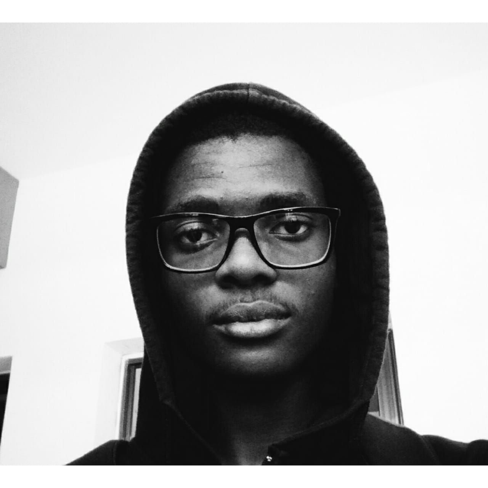

Tarefa
Autobiografia
Meu nome é Vivaldo Roque, tenho 21 anos, nasci no município do Cazenga no dia 19 de Fevereiro de 2001. Sou filho de Isaac Roque e Maria de Lurdes Cristóvão Letino Roque. Estudo no Instituto Superior Politécnico de Kangonjo (ISKA), estou cursando o terceiro ano de engenharia informática. Atualmente moro na centralidade do Sequele no bloco 2, tenho 3 passatempos que faço por diversão que são calistenia, resolver quebra-cabeças e programação.
Durante maior parte da minha infância não tinha permissão para sair a rua, segundo meus pais era melhor eu ficar em casa para minha segurança mas eu nunca aceitei isso mas também não era louco para quebrar as regras e apanhar não gosto que batem em mim então tecnicamente aceitei minha vida como ela é, para me destrair brincava sozinho, jogava videogames, acho que quando tinha 9-10 anos mas a idade está nesse intervalo já acedia a internet. E o tempo foi passando fui aprendendo mais e mais descarregava jogos piratas baixava modificações para os mesmos jogos, baixava filmes e músicas praticamente de tudo um pouco. Ainda na faixa dos 10-11 anos comecei a aprender como usar o sistema linux comecei com o Ubuntu, foi também que comecei a usar máquinas virtuais. Comecei a estudar sobre hacking devido a falta de componentes eletronicos desisti em 2016, mas depois conheci a programação, na verdade eu j]a tive contato com a programação quando tinha 11-12 anos mas nunca aprendi porque eu não sábia de onde vinham os comandos e seguir o youtube não era opção eu não tenho paciência de ver um monte de video. Mas acabei conhecendo alguém que tem um livro chamado "Liguagem C - Luis Damas" esse foi me primeiro livro e minha primeira linguagem.
A experiencia com programação vai desde (2017 - hoje), já explorei com diversas linguagens e tecnologias, atualmente estou aprendendo sobre IA e Machine Learning. Um dos meus maiores projetos é o que se encontra presente na Play Store denominado CFOP Trainer. Gosto de práticar um esporte denominado speedsolving que consiste em resolver quebra-cabeça em velocidade, estudei as regras da associação mundial de cubo mágico, e comprando equipamento para exercer a atividade, minha experiencia com o esporte vai desde (2018 - hoje). Nunca fui muito amigo de praticar desporto/esporte (futebol, basket, etc) mas quando descobri a calistenia tudo mudou comecei a praticar essa modalidade esportiva pratico ela desde (2018 - hoje). Agradeço aos meus país por nunca me darem tudo que eu quero mas o necessario para minha sobrevivência.
Fatos curiosos sobre mim:
- Não sou fã de desenvolvimento web.
- Estudei Ciências Fisicas e Biologicas no ensino médio.
- Comecei a estudar programação de livre e espontanea vontade.
- Nunca fui ao cinema, talvez por falta de interesse.
- As vezes sinto que sou visto de forma diferente por outras pessoas sinto-me um esquisito.